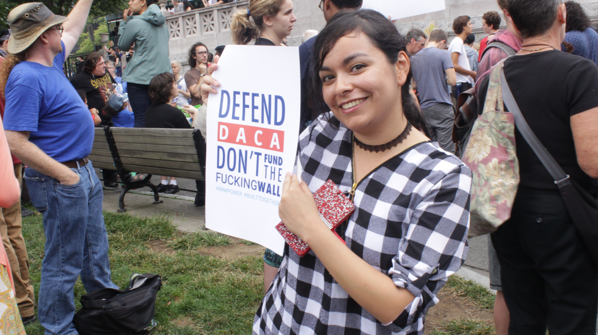
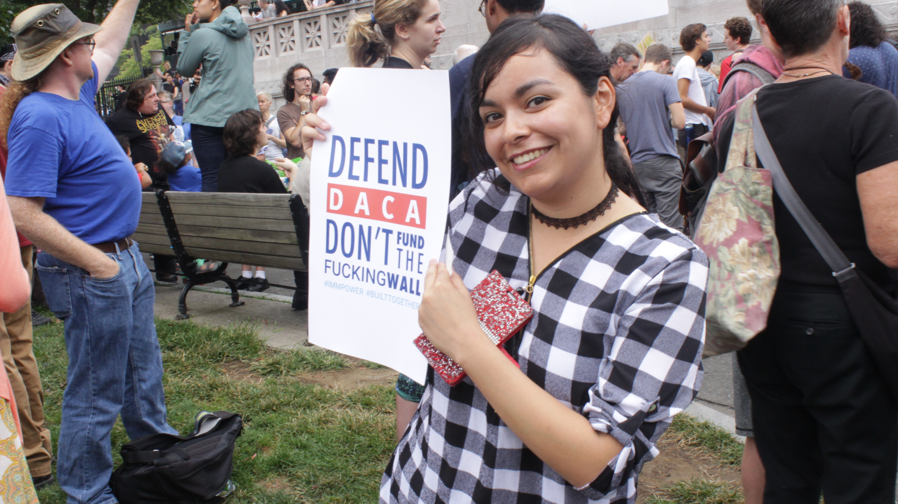

It was a rough ride sitting cramped in the back of a truck and she was just five years old. She was supposed to say she was a cousin when the border immigration officer asked her. The officers, looking enormous to the small girl, read out names of all her cousins and she raised her hand every time.
That’s how Brenda Esqueda, now a 19-year-old sophomore at Harvard, but back then an undocumented immigrant, was brought from Mexico by her parents. With few memories of Mexico, Omaha became the only home she knew -- but because of her illegal status she never belonged in either place. Or at least she didn’t until 2012, when the creation of Deferred Action for Childhood Arrivals (DACA) allowed certain young undocumented immigrants brought to the United States as children, to receive a temporary relief from deportation and also allowed work authorization.
DACA followed Congress’ failure to pass The Development, Relief, and Education for Alien Minors (DREAM) Act which was first introduced in 2001. The children of the undocumented immigrants who would have been protected have since been called Dreamers. But in a move, received with shock and anger by many, the Trump administration rescinded DACA in early September and gave Congress six months to come up to pass new legislation. Unless Congress acts, Dreamers could begin facing deportation as early as March of 2018.
The Pew Research Center estimates that the DACA program has shielded as many as 790,000 young undocumented immigrants, including almost 7900 in Massachusetts alone, since its creation. In 2017 alone, up until the DACA-repeal attempt, as many as 200,000 dreamers renewed their DACA benefits. Since the start of the program, almost 78% of the approved applications were from Mexico, followed by El Salvador, Guatemala and Honduras.
Bruno Villegas, another Harvard sophomore, is also a Dreamer who came here with his parents when he was six years old, on a visitors’ visa. The family overstayed the visa and have had to stay undocumented ever since.
“It is tough for me dealing with all the financial difficulties but it has been tougher for my parents, because they are the ones who are working, getting paid less, and being exploited by their employers,” he says. “They had to sacrifice their whole lives just because they thought that being here would make their kids’ lives better.”
And it looked like his life was getting better with DACA. Apart from shielding the immigrant children, DACA also allowed them to get work permits, social security numbers, and travel.

Bruno Villegas says the elimination of DACA would put his life in America in jeopardy. (Felippe Rodrigues)
Jessica Vega, a 20-year-old special needs girl, studying in high school now, was five, when her parents brought her to United States from El Salvador, to escape “bad people”. Located in the heart of Central America, El Salvador is plagued by gang violence and drug trafficking. The murder rate is high. Not even children are safe. At least one child a day – on average – is found murdered in El Salvador.
“Some people come here because they have special needs kids. Like in my country, just because you have something [some disability] they treat you bad. They treat you like dogs. And that’s why people come here -- to get a better life,” she explains.
Alexandra Taco, a DACA-recipient from Ecuador, is also disabled. She is wheelchair-bound.
“Ecuador is not wheelchair friendly,” says Andrea Taco, her sister, also a DACA-recipient, explaining why her family came to the U.S.
They were brought to the United States when Alexandra was five-years-old and Andrea was just 11 months’ old. Their DACA is set to expire in January 2019.
Dreamer Catalina Santiago, a DACA recipient, is part of a resistance group called Movimiento Cosecha. She used to think she was safe from deportation; at least safer than her undocumented parents. Now all of them are in danger. Ironically, her status means that the government has information about her that could be used to find her family if DACA is not renewed. Santiago, a member of the resistance group Movimento Cosecha, is not worried just about herself. Or just about DACA. At the Resist DACA rally in held Boston on September 16,Santiago argued for amnesty for all 11 million undocumented immigrants, “I don’t want to throw my parents under the bus. I don’t just want a legal status for the Dreamers, but also for all the undocumented immigrants. After all, my parents are the reason I get to be in this country.”
When did immigration become illegal in USA?
Many Americans want the world to view the United States of America as a melting pot of cultures; however, actually understanding how this pot came to be through the pilgrims, migrants, immigrants and refugees, is also essential. In that case, what is legal and what is illegal has to be viewed through a lens - a lens of time and policies determined by that time.
Why does America support undocumented immigrants and dreamers?
Stephanie Cooper Schoen, a 70-year-old American, is a supporter of immigrant causes and DACA. “I am Jewish, with grandparents who emigrated to America from Eastern Europe, but with relatives who were later killed during the Holocaust. They would’ve survived had they been accepted as refugees into America or other countries,” says Schoen.“Those family stories have remained powerful through the decades and have stayed with me.”
Like Schoen, many others feel lucky to be American citizens but give credit to their undocumented or illegal ancestors.
For Ashley Shimabukuro, a young woman holding a sign reading “I am an American citizen because of the sacrifices of two undocumented immigrants” at the rally, the memories are more recent. Her grandparents came to the States from Mexico. Her grandfather would get denied entry and sent back and he would come back again the next morning. They finally were able to cross the border and were undocumented for a long while.
“I am here because of their hard work and sacrifices”, she says solemnly.
Chelsea from New Hampshire, is supporting immigration for her friends. “I don’t have any friends who are specifically on DACA, but I have friends who are sons and daughters of immigrants and I think they are who really make us whole as a country. I think they bring so much love and fun and joy to my life. And I would never want to take away a program that allows them to be a part of our lives.”
 


Her friend Abby Roden, who is a dyslexic, had to take combined classes with ESL learners, most of whom were undocumented. “They were always my community; they adopted me and I can’t imagine what my life would be without them. My best friends are on DACA, and the fact is, that we thought they were safe, and we were secure about this, and I was always freaking out but they were calm but for the first time, when they announced this, my best friend called me and cried.”
How do the undocumented and the Dreamers contribute to USA?
There are a lot of arguments against DACA and legalizing other undocumented immigrants through programs like TEP and DAPA. These revolve around how these immigrants are the root of all the crime and drugs; but that, like everything else, is just one side of the story. Those opposing legalizing the status of the undocumented also point to how this group of people make no contributions to the country and in fact, take away the rightful jobs of Americans.
“We are not criminals, and we are not rapists, and we are not bringing in drugs, people come here, leave their own countries, because they want a better life for themselves, but mostly it is for their children,” reacts Andrea.
“I have been treated as a second class citizen since I was five-years-old. As you can tell, I have no accent. I am as much a citizen of this country, as anyone else. And everybody else too, they work so hard, to provide, to build a life for themselves, so, why is it ok to take our rights away?” asks Andrea who has been working work at Schneider Electric in internal marketing and does graphic design for the cyber security program. “I am heavily taxed as I am single. And I don’t have kids, so I don’t get any money back really; so that is my contribution [to the United States of America],” she explains.
Life...if sent back (“Home” again)
Just as not all legal citizens of America are criminals and pay taxes, so do the undocumented and those on DACA. And USA stands to lose those contributions if they are deported. And what about the Dreamers? What do they stand to lose?
Romina, originally from Argentina, cannot imagine a life away from here. “I am a Dreamer. We were kids who came here when we were really young; so this is all we know. If I were to go back, I wouldn’t even know where I would start. I love this country. It is what I call home.”
Andrea Taco says she might cry herself to sleep for two weeks if she is sent back but she is more worried about her sister, Alexandra, who is disabled. “My parents didn’t bring us here as criminal masterminds. They brought us here because my sister needed medical attention.”
“I think I will die of depression if I have to leave,” says Alexandra tearing up. “Here, I can do my own grocery shopping, I am studying to get a driver’s license, I am able to go to work, my house is completely accessible here… Independence is empowerment for me just like for everybody else. And it saddens me to think about losing that.”
“We are hard workers and we will adapt. But just to think that we have to uproot our lives… and start from zero. It’s sad. It’s not fair.”